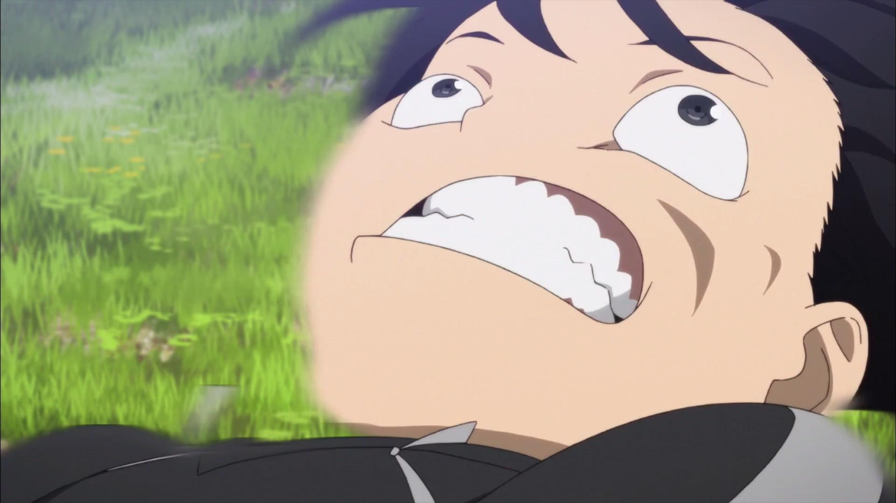

Kirito and Sword Art Online are owned by Aniplex USA, A-1 Pictures, and Reki Kawahara. This website is simply a fan made page bulit by an otaku with trash taste and too many computer skills.
Kazoo Cover by: "Crossing Field" - Sword Art Online - Kazoo Cover (Evan's Kazoo Covers)